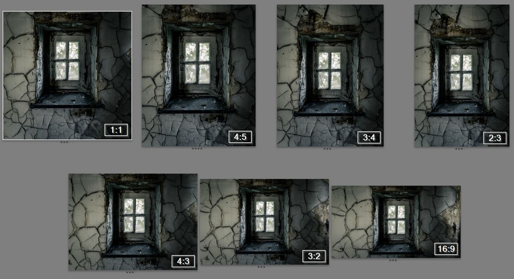
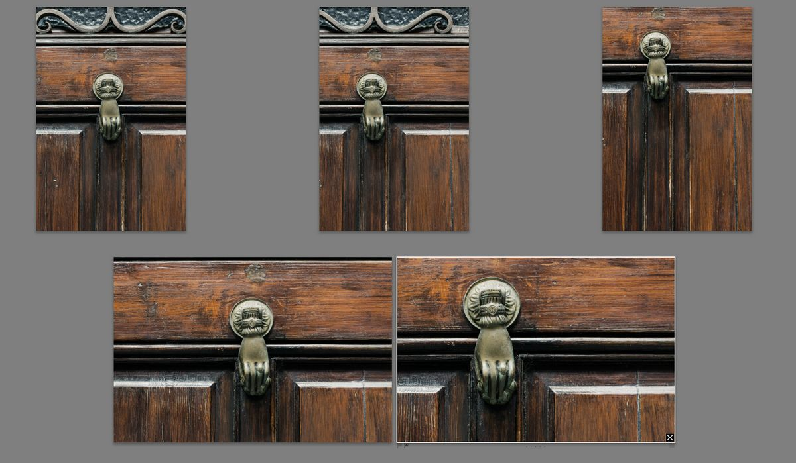
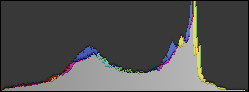
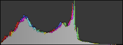
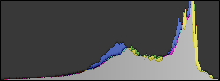
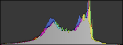
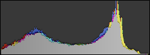
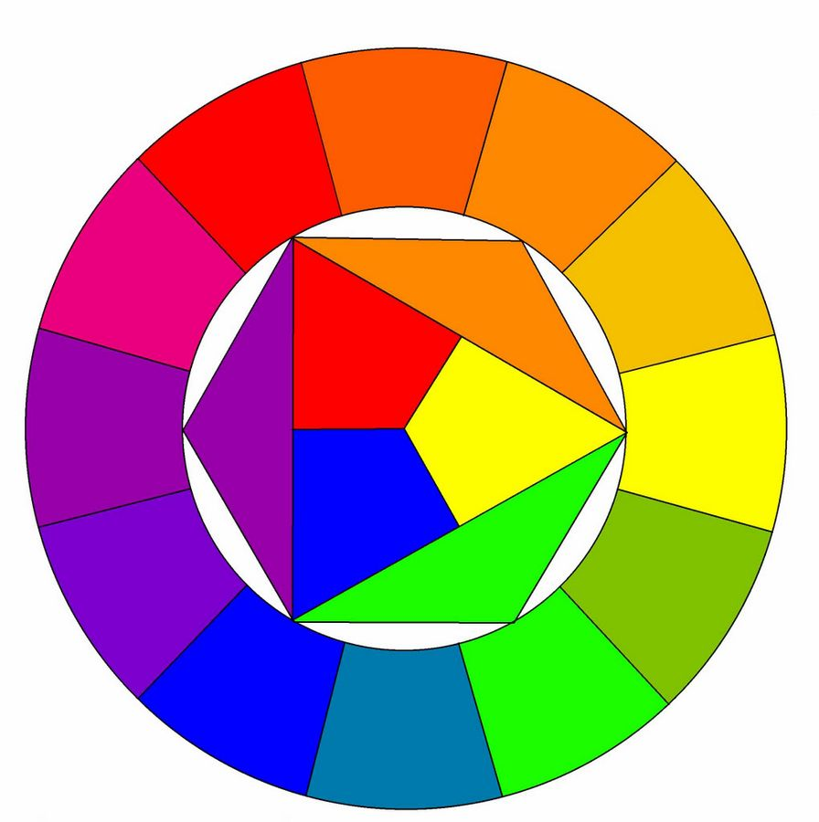
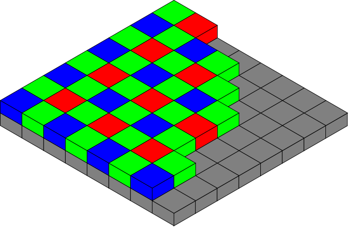

Sessie 2
Ingrediënten voor een 'goede' foto
Ingrediënten
- Kadering
- Ontwerp
- (Foto)grafische elementen
- Licht en kleur
Kadering
Kadering
- Beeldformaat & verhoudingen
- Beeldvulling & plaatsing
- Horizon
- Kader in kader
Beeldformaat & verhoudingen
Aspect ratio
Beeldvulling & plaatsing
- Wat is het onderwerp?
- Hoe groot moet het overkomen?
- Waar in de foto moet het staan?
Beeldvulling & Plaatsing
Gulden snede

Bron: Dicklyon, CC BY-SA 3.0
Gulden snede
vs
Regel van derden

Horizon
- In hoeverre is de lucht belangrijk?
- Wel belangrijk => Veel lucht, lage horizon
- Niet belangrijk => Weinig lucht, hoge horizon
Kader in kader
Ontwerp
Ontwerp
- Contrast
- Balans
- Voorgrond/achtergrond
- Ritme
- Patroon
- Textuur
- Perspectief & Diepte
- Interesse & Inhoud
Contrast
- Licht / donker
- Hard / zacht
- Veel / weinig
- Sterk / zwak
- Kort / lang
- Snel / langzaam
Contrast
Balans
- Evenwicht van beeldelementen
- Balans zorgt voor rust
- Onbalans zorgt voor dynamiek
Symmetrie in elementen
Evenredige verdeling van elementen
Voorgrond / achtergrond
Ritme
- Regelmatig voorkomende elementen
Patroon
Beeld is grotendeels opgebouwd uit dezelfde elementen.
Patroon
Textuur
Detail in de structuur van elementen.
Textuur
Textuur
Perspectief & diepte
- Groothoeklens maakt perspectief sterker
- Telelens maakt perspectief zwakker
Interesse & inhoud
- Persoonlijke voor- of afkeur
- Zwakke of sterke inhoud
- Wat voor gevoel wil je overbrengen?
(Foto)grafische elementen
(Foto)grafische elementen
- Eén punt
- Lijnen
- Vormen
Eén punt
Eén punt

Eén punt
Lijnen
- Horizontaal
- Verticaal
- Diagonaal
- Curve
Horizontaal
Horizontaal
Verticaal
Horizontaal & verticaal

Diagonaal
Diagonaal

Curve
Curve
Vormen
Wij zijn goed in het herkennen van vormen en patronen.
We zien zelfs dingen die er niet zijn.
'Gezicht' op Mars in 1976
'Gezicht' op Mars in 2006
Als een foto herkenbare vormen bevat is de foto boeiender voor de kijker.
Basisvormen
- Driehoek
- Rechthoek
- Cirkel
Driehoek
Driehoek
Rechthoek
Cirkel

Cirkel
Licht & kleur
Licht & kleur
- Helderheid
- Contrast
- Kleuren
Helderheid
Geeft aan hoe licht een foto is.

Gemiddelde helderheid & gemiddeld contrast

Lagere helderheid & gemiddeld contrast

Hoge helderheid & gemiddeld contrast
Effect van helderheid in histogram
Helderheid van laag naar hoog
Contrast
Verschil tussen lichte en donkere tinten.
Gemiddelde helderheid & gemiddeld contrast

Gemiddelde helderheid & laag contrast

Gemiddelde helderheid & hoog contrast
Effect van constrast in histogram
Contrast van laag naar hoog
Kleuren
- Kleurtheorie
- Koel & warm
- Zwart/wit
Kleurtheorie
Primair: rood, geel, blauw
Secundair: groen, oranje, violet
Constrasterende primaire of secundaire kleuren zijn interessant om naar te kijken.
Constrasterende kleuren
Koel & warm
Warme kleur
Koele kleur
Koele kleur
Rood, Groen en Blauw
Zijn de enige kleuren die de sensor kan onderscheiden.
Bayer filter voor sensor
Bron: Cburnett, CC BY-SA 3.0
Witbalans
Witbalans instelling op je camera bepaalt hoe de rode, groene en blauwe pixels worden vertaald naar de uiteindelijke kleuren.
Witbalans en RAW
Als je in RAW format fotografeert kan je de witbalans achteraf instellen.
Zwart/wit
Soms kunnen kleuren afleiden of storend zijn.
Beeld kan sterker overkomen in zwart/wit.
Huiswerk
Maak twee foto's waarbij je rekening houd met de regel van derden:
- Eén foto waarbij lijnen of vormen centraal staan.
- Eén foto waarbij kleurgebruik centraal staat.
Vragen / opmerkingen / huiswerk
marcduiker@gmail.com